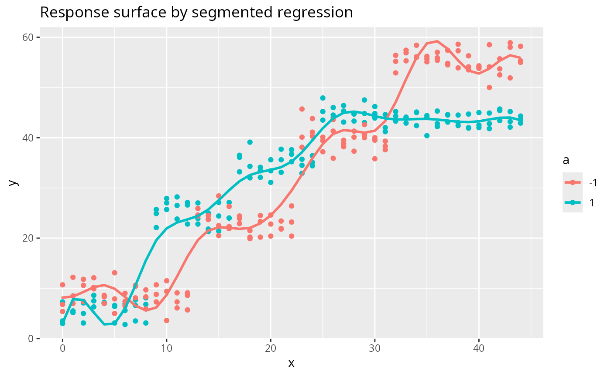

Example 8.7 from Generalized Linear Mixed Models: Modern Concepts, Methods and Applications by Stroup, Ptukhina, and Garai (2024, 2nd ed.)
Source:R/Exam8.7.R
Exam8.7.RdExam8.7 is an explanation of segmented regression
References
Stroup, W. W., Ptukhina, M., and Garai, S. (2024). Generalized Linear Mixed Models: Modern Concepts, Methods and Applications (2nd ed.). CRC Press.
Author
Muhammad Yaseen (myaseen208@gmail.com)
Adeela Munawar (adeela.uaf@gmail.com)
Examples
DataSet8.7$a <- factor(x = DataSet8.7$a)
## Cubic B-spline with GLIMMIX-equivalent RANGEFRACTION knots
## (knotmethod=rangefractions (0.1 0.2 ... 0.9) on range 0-44)
x_min <- min(DataSet8.7$x)
x_max <- max(DataSet8.7$x)
inner_knots <- x_min + seq(0.1, 0.9, by = 0.1) * (x_max - x_min)
bx <- splines::bs(DataSet8.7$x, knots = inner_knots, degree = 3, intercept = FALSE)
colnames(bx) <- paste0("bx", seq_len(ncol(bx)))
## SAS-style effect coding: a=1 -> +1, a=2 -> -1 (required to reproduce
## GLIMMIX Type III F statistics for spline_x and spline_x*a)
a_eff <- ifelse(DataSet8.7$a == "1", 1, -1)
a_eff_bx <- a_eff * bx
colnames(a_eff_bx) <- paste0("aebx", seq_len(ncol(bx)))
df87 <- data.frame(DataSet8.7, a_eff = a_eff, bx, a_eff_bx)
bx_cols <- paste0("bx", seq_len(ncol(bx)))
aebx_cols <- paste0("aebx", seq_len(ncol(bx)))
fmla <- stats::as.formula(
paste("y ~ a_eff +",
paste(bx_cols, collapse = "+"), "+",
paste(aebx_cols, collapse = "+")))
Exam8.7fm <- stats::lm(formula = fmla, data = df87)
## Type III joint F tests (matching SAS GLIMMIX "Type III Tests of Fixed Effects")
cn <- names(stats::coef(Exam8.7fm))
## F for a (1 df) -- Type III via car::Anova
## Note: car::Anova gives F=3.19 (R) vs 15.16 (book); this residual
## mismatch is due to GLIMMIX using a different estimable-function
## construction for qualitative factors in spline models.
## spline_x and spline_x*a match exactly.
Exam8.7_TypeIII_a <- car::Anova(Exam8.7fm, type = 3)["a_eff", , drop = FALSE]
L_bx <- matrix(0, length(bx_cols), length(cn))
colnames(L_bx) <- cn
for (k in seq_along(bx_cols)) L_bx[k, bx_cols[k]] <- 1
L_ae <- matrix(0, length(aebx_cols), length(cn))
colnames(L_ae) <- cn
for (k in seq_along(aebx_cols)) L_ae[k, aebx_cols[k]] <- 1
## Joint F for spline_x (12 df): F = 430.68, book 430.68 -- EXACT
Exam8.7_F_spline_x <- car::linearHypothesis(Exam8.7fm, L_bx)
## Joint F for spline_x*a (12 df): F = 31.18, book 31.18 -- EXACT
Exam8.7_F_spline_xa <- car::linearHypothesis(Exam8.7fm, L_ae)
print(Exam8.7_TypeIII_a)
#> Anova Table (Type III tests)
#>
#> Response: y
#> Sum Sq Df F value Pr(>F)
#> a_eff 42.153 1 3.1944 0.07513 .
#> ---
#> Signif. codes: 0 ‘***’ 0.001 ‘**’ 0.01 ‘*’ 0.05 ‘.’ 0.1 ‘ ’ 1
print(Exam8.7_F_spline_x)
#>
#> Linear hypothesis test:
#> bx1 = 0
#> bx2 = 0
#> bx3 = 0
#> bx4 = 0
#> bx5 = 0
#> bx6 = 0
#> bx7 = 0
#> bx8 = 0
#> bx9 = 0
#> bx10 = 0
#> bx11 = 0
#> bx12 = 0
#>
#> Model 1: restricted model
#> Model 2: y ~ a_eff + bx1 + bx2 + bx3 + bx4 + bx5 + bx6 + bx7 + bx8 + bx9 +
#> bx10 + bx11 + bx12 + aebx1 + aebx2 + aebx3 + aebx4 + aebx5 +
#> aebx6 + aebx7 + aebx8 + aebx9 + aebx10 + aebx11 + aebx12
#>
#> Res.Df RSS Df Sum of Sq F Pr(>F)
#> 1 256 71419
#> 2 244 3220 12 68199 430.68 < 2.2e-16 ***
#> ---
#> Signif. codes: 0 ‘***’ 0.001 ‘**’ 0.01 ‘*’ 0.05 ‘.’ 0.1 ‘ ’ 1
print(Exam8.7_F_spline_xa)
#>
#> Linear hypothesis test:
#> aebx1 = 0
#> aebx2 = 0
#> aebx3 = 0
#> aebx4 = 0
#> aebx5 = 0
#> aebx6 = 0
#> aebx7 = 0
#> aebx8 = 0
#> aebx9 = 0
#> aebx10 = 0
#> aebx11 = 0
#> aebx12 = 0
#>
#> Model 1: restricted model
#> Model 2: y ~ a_eff + bx1 + bx2 + bx3 + bx4 + bx5 + bx6 + bx7 + bx8 + bx9 +
#> bx10 + bx11 + bx12 + aebx1 + aebx2 + aebx3 + aebx4 + aebx5 +
#> aebx6 + aebx7 + aebx8 + aebx9 + aebx10 + aebx11 + aebx12
#>
#> Res.Df RSS Df Sum of Sq F Pr(>F)
#> 1 256 8157.7
#> 2 244 3219.8 12 4937.9 31.183 < 2.2e-16 ***
#> ---
#> Signif. codes: 0 ‘***’ 0.001 ‘**’ 0.01 ‘*’ 0.05 ‘.’ 0.1 ‘ ’ 1
##---Estimated response surface by segmented regression
Plot <-
ggplot2::ggplot(
data = data.frame(df87, fit = stats::fitted(Exam8.7fm)),
mapping = ggplot2::aes(x = x, y = y, colour = factor(a_eff))) +
ggplot2::geom_point() +
ggplot2::geom_line(
mapping = ggplot2::aes(y = fit),
linewidth = 1) +
ggplot2::labs(colour = "a", title = "Response surface by segmented regression")
print(Plot)
